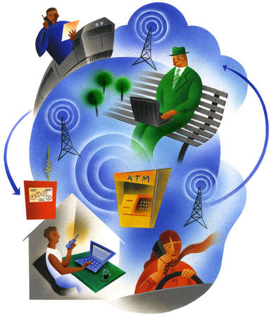

.
Wireless
|
Objetivo
-
Que el
alumno realice un resumen de la tecnología y método de
acceso Wireless a través de una investigación bibliográfica
utilizando los recursos de la biblioteca digital y exprese su opinión
personal del artículo.
Instrucciones
-
Utiliza
los recursos de la biblioteca digital
y busca información relevante, en artículos recientes, sobre
sobre las especificaciones o características de la tecnología
Wireless.
-
Al realizar
la búsqueda de esta información encontrarás varios
artículos sobre la tecnología Wireless. Selecciona, con tus
compañeros de equipo colaborativo, el que consideres más
relevante, léelo y realiza un resumen con tus compañeros
de equipo colaborativo sobre el contenido de este artículo.
-
El resumen
no podrá ser mayor de 6 hojas y no menor de 3 hojas (sin contar
la portada).
-
En esta
ocasión debes entregar una copia impresa del artículo seleccionado
y una copia impresa del resumen que realizaste (puede ser en hojas recicladas).
-
El resumen
deberá incluir al final la opinión personal de cada integrante
del equipo sobre el contenido del artículo.
Requisitos
Portada:
En el documento Portada.doc encontrarás
un ejemplo con los puntos requeridos para la portada de tu tarea, como:
nombre del equipo, nombre de los integrantes y sus matrículas, etc.
-
El nombre
del trabajo
-
Los nombres
y matrículas de los integrantes del equipo
-
El nombre
del equipo
-
La fecha
de entrega
Formato
del documento:
-
Márgenes:
1.0, 2.0, 1.0, 1.0 pulgadas (Superior, Inferior, Izquierdo, Derecho).
-
Font:
Times New Roman
-
Tamaño:
16 puntos en Títulos de Portada; 14 puntos de Títulos dentro
del texto; 12 puntos en el resto del documento
-
Espacio
entre líneas: Doble línea
|